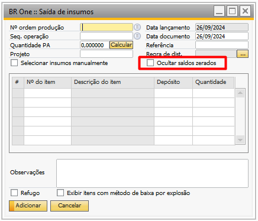
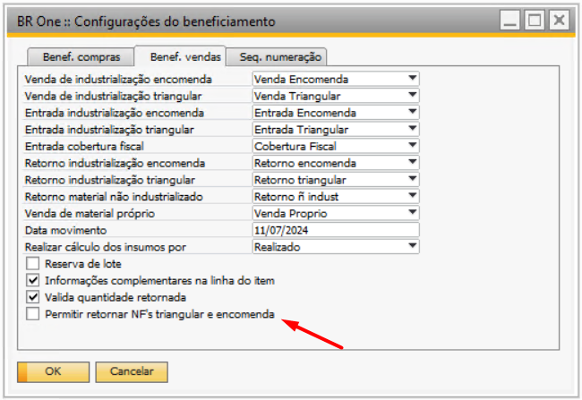

Versão 4.11.329
Nota
Melhoria
Ocultar itens apontados na tela saída de insumos
Na atualização mais recente do BR One 329, foi implementada uma melhoria na tela “BR One :: Saída de insumos”. Agora, a flag Ocultar saldos zerados foi adicionada, permitindo ocultar os itens que já foram apontados 100% na Ordem de Produção quando marcada. Isso resulta em uma visualização mais clara e focada dos itens que ainda precisam ser apontados.
Faturamento unificado de Itens de encomenda e triangular
Na atualização mais recente do BR One 329, foi implementada uma melhoria no processo de beneficiamento de vendas. Agora, é possível faturar, em uma única nota fiscal (NF), itens de encomenda e triangular. Na Etapa 2 do processo, as NF’s de encomenda e triangular serão exibidas, independentemente do pedido de venda selecionado na Etapa 1.
Para viabilizar essa funcionalidade, foi criado um parâmetro nas configurações do beneficiamento, na aba Benef. Vendas. O parâmetro, denominado Permitir retornar NFs triangular e encomenda, ao ser marcado, permite que as NF’s de encomenda e triangular sejam exibidas na Etapa 2 do assistente de faturamento e retorno. Se o parâmetro não estiver marcado, o processo seguirá o fluxo padrão, conforme já ocorre.
Nota
Correções
Texto observação do diário divergente da NF
Realizado ajuste na criação do texto de observação do diário para quando duas notas fiscais são adicionadas simultaneamente.
Exibição dos pedidos de venda vinculado ao cliente do cabeçalho
Realizado ajuste no assistente de faturamento e retorno no processo de beneficiamento de vendas. Agora, ao informar o código do cliente e a filial, serão exibidos os pedidos de venda vinculados a esse cliente.
Seleção do nº lote através do atalho alt + S
Realizado ajuste na tela de seleção do nº de lote no SAP, permitindo a utilização do atalho Alt + S para selecionar o lote automaticamente.
Erro ao selecionar lote ao cancelar documento de remessa
Realizado ajuste na validação dos lotes durante a seleção de lote no cancelamento de remessa no processo de beneficiamento de compras. Com isso, evita a ocorrência da mensagem de validação “BR One :: Necessário selecionar o(s) mesmo(s) número(s) de lote da transferência origem (xxx). Verifique o log para mais informações.”